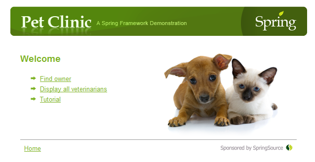
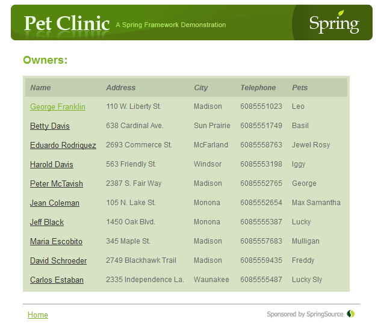
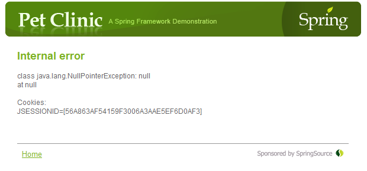
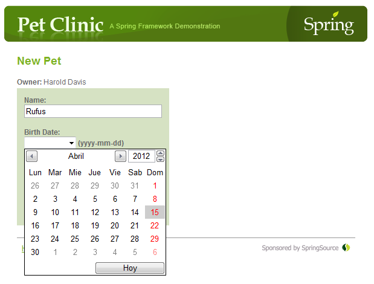
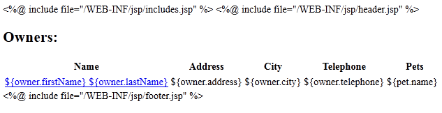
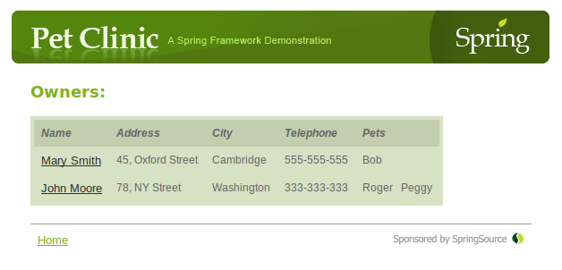

Bringing HTML5 to the Spring PetClinic with Thymeleaf
The Spring PetClinic application
PetClinic is one of the example applications created by SpringSource for the Spring Framework. It is designed to display and manage information related to pets and veterinarians in a pet clinic. More info can be obtained here, and the source code can be obtained here.
Pet Clinic originally includes a view layer created with JSP, which we will replace using Thymeleaf:
- Absolutely no modifications will be made to the Java code, just the view layer. The JSP files will be replaced and the application will be reconfigured.
- The original XHTML will be replaced with HTML5, and some HTML5-specific features will be added (i.e. form input fields with type tel, date,...).
- Apart from the switch to HTML5, all the application's interface will have to display exactly the same as the original.
- Thymeleaf template files should display OK when open statically on a browser (Natural templating).
All the code of the PetClinic+Thymeleaf application can be obtained at the Thymeleaf Project's Documentation page. Note that the original JSP files have not been removed from the source tree but rather moved to the doc/old_jsps folder at the source tree, so that you can still access them in order to compare with the new templates.
The version of the PetClinic application used as a base is the state of its SVN trunk as of March 2012.
The original JSP view layer
The original JSP view layer has a number of problems we will try to fix when converting the view layer to Thymeleaf:
- The JSP templates seem to define an XHTML interface, although no DOCTYPE declaration is applied and several minor format errors appear —like e.g. minimized tags without a space before the / like <br/> instead of <br />—. We will convert this application to HTML5.
- JSPs include both JSTL and Spring-specific tags. None of which are understandable by browsers, so there is no way for it to represent the pages statically (no static prototyping possible).
- JSTL tags use the JSP EL (Expression Language), whereas the tags from the JSP Spring taglibs use Spring EL. Two different expression languages are therefore mixed in the same pages.
- The original JSP templates are not complete or well-formed HTML documents. For example,
the "show owners" page is broken down into three fragments:
- A header.jsp file with unclosed <body> and <div> tags,
- A show.jsp file which does not have any <head> nor <body> tags —they come from the included header—, and defines the content of the "show owners" page.
- A footer.jsp file with closing </div> and </body> tags corresponding to the ones opened at header.
- Some JSP pages —for exception handling, for example— include java code scriptlets, which is not a good practice.
Configuration
Basic project configuration
Some basic configuration steps will be needed:
- The pom.xml file will be modified in order to add the Thymeleaf dependencies to it and remove the JSP-related ones.
- The original web.xml file will also be modified in order to remove the declaration of a default servlet depending on a specific Tomcat class for serving static resources —images, css, etc—. Instead, the much cleaner <mvc:resources/> mechanism will be used at our petclinic-servlet.xml Spring bean configuration file:
<!--
- Static resources
-->
<mvc:resources location="/" mapping="/static/**" />
<!--
- The controllers are autodetected POJOs labeled with the @Controller annotation.
-->
<mvc:annotation-driven />
<context:component-scan base-package="org.springframework.samples.petclinic.web"/>
petclinic-servlet.xml
Adding the Thymeleaf Spring beans
Our next configuration step will be to add three required beans at the Spring beans configuration file, petclinic-servlet.xml:
- The Thymeleaf template resolver that will be in charge of reading the template files to be processed. For this application we will use a ServletContextTemplateResolver.
- The Thymeleaf template engine instance, of class SpringTemplateEngine.
- The Thymeleaf view resolver, a ThymeleafViewResolver instance implementing Spring's org.springframework.web.servlet.ViewResolver interface. This bean will substitute the original InternalResourceViewResolver bean which enabled JSP support in the original application.
<bean id="templateResolver"
class="org.thymeleaf.templateresolver.ServletContextTemplateResolver">
<property name="prefix" value="/WEB-INF/thymeleaf/" />
<property name="suffix" value=".html" />
<property name="templateMode" value="HTML5" />
<property name="order" value="2" />
<property name="cacheable" value="false" />
</bean>
<bean id="templateEngine" class="org.thymeleaf.spring3.SpringTemplateEngine">
<property name="templateResolver" ref="templateResolver" />
</bean>
<bean class="org.thymeleaf.spring3.view.ThymeleafViewResolver">
<property name="templateEngine" ref="templateEngine" />
</bean>
Note that, as a difference from the original application, our templates will live at the /WEB-INF/thymeleaf folder instead of the original /WEB-INF/jsp.
Handling uncaught exceptions through Spring
The original application handles some types of exceptions through Spring, declaring a SimpleMappingExceptionResolver bean:
<bean class="org.springframework.web.servlet.handler.SimpleMappingExceptionResolver">
<property name="exceptionMappings">
<props>
<prop key="org.springframework.web.servlet.PageNotFound">pageNotFound</prop>
<prop key="org.springframework.dao.DataAccessException">dataAccessFailure</prop>
<prop key="org.springframework.transaction.TransactionException">dataAccessFailure</prop>
</props>
</property>
</bean>
The problem is, this does not include every type of exception possible and, for all the remaining exceptions, an ugly JSP file called uncaughtException.jsp is originally configured at web.xml (the reason why we call this one "ugly" will be explained later):
<error-page>
<exception-type>java.lang.Exception</exception-type>
<!-- Displays a stack trace -->
<location>/WEB-INF/jsp/uncaughtException.jsp</location>
</error-page>
As we want to implement this uncaught exception page using Thymeleaf, we will need our exception handling for these exceptions to go through Spring and not let our web server directly execute our template —only JSPs are directly understood by Java web servers—. So we will remove the code above from web.xml and we will modify the exception handling bean declaration at petclinic-servlet.xml:
<bean class="org.springframework.web.servlet.handler.SimpleMappingExceptionResolver">
<property name="exceptionMappings">
<props>
<prop key="org.springframework.web.servlet.PageNotFound">pageNotFound</prop>
<prop key="org.springframework.dao.DataAccessException">dataAccessFailure</prop>
<prop key="org.springframework.transaction.TransactionException">dataAccessFailure</prop>
</props>
</property>
<property name="defaultErrorView" value="uncaughtException"></property>
</bean>
From JSP to Thymeleaf
PetClinic includes more than 10 JSP XHTML templates, and we will rewrite all of them using Thymeleaf and HTML5. However, for the sake of brevity, we will only inspect two of them in detail in this article:
- owners/list.jsp » owners/list.html
- uncaughtException.jsp » uncaughtException.html
Remember you can see all the templates at the source code, downloadable from the documentation page, and also that you can review the original JSP files at the doc/old_jsps folder.
owners/list.jsp
This page shows the list of veterinarians that match the last name we introduced in a previous page (search.jsp):
In order to convert this page to Thymeleaf, we will:
- Rename list.jsp to list.html.
- Remove all <%@ include %> directives as we do not need any JSP tag libraries and the header
and footer pieces of HTML will be added to the page by means of a th:substituteby
attribute. Original header.jsp and footer.jsp files have been merged into a single layout.html file,
now containing both fragments.
<!-- list.jsp -->
<%@ include file="/WEB-INF/jsp/includes.jsp" %>
<%@ include file="/WEB-INF/jsp/header.jsp" %><!-- list.html -->Note how list.html contains more code at its <head> section than the original JSP file, which in fact does not have one as it is included from header.jsp. But doing it this way is merely optional, and its only aim is to allow the list.html Thymeleaf template to display statically as a prototype (something nearly impossible with JSP). The <head> tag in list.html will in fact be substituted by the header fragment in layout.html when executed by means of the th:substituteby attribute seen above.
<!DOCTYPE html>
<html xmlns:th="http://www.thymeleaf.org">
<head th:substituteby="layout :: header">
<meta http-equiv="Content-Type" content="text/html; charset=UTF-8"/>
<link rel="stylesheet" href="../../../styles/petclinic.css" type="text/css"/>
<title>PetClinic :: a Spring Framework demonstration</title>
</head>
<body>
-
Change the page body. The original code looks like this:
<!-- list.jsp -->Which we will replace with:
<table>
<thead>
<th>Name</th>
<th>Address</th>
<th>City</th>
<th>Telephone</th>
<th>Pets</th>
</thead>
<c:forEach var="owner" items="${selections}">
<tr>
<td>
<spring:url value="owners/{ownerId}" var="ownerUrl">
<spring:param name="ownerId" value="${owner.id}"/>
</spring:url>
<a href="${fn:escapeXml(ownerUrl)}">${owner.firstName} ${owner.lastName}</a>
</td>
<td>${owner.address}</td>
<td>${owner.city}</td>
<td>${owner.telephone}</td>
<td>
<c:forEach var="pet" items="${owner.pets}">
${pet.name}
</c:forEach>
</td>
</tr>
</c:forEach>
</table>
<!-- list.html file -->In the code above you can see how, for example, we replaced the use of the c:foreach tag with a th:each attribute in a <tr> tag. Also, our Thymeleaf version is longer because we have added some prototyping code (an additional row in the table) just to be displayed when the page is statically open. So we use the th:remove attribute to avoid this prototyping code being rendered when deployed into a server.
<table>
<thead>
<tr>
<th>Name</th>
<th>Address</th>
<th>City</th>
<th>Telephone</th>
<th>Pets</th>
</tr>
</thead>
<tr th:each="owner : ${selections}">
<td>
<a th:href="@{'/owners/' + ${owner.id}}" href="show.html"
th:text="${owner.firstName + owner.lastName}">Mary Smith</a>
</td>
<td th:text="${owner.address}">45, Oxford Street</td>
<td th:text="${owner.city}">Cambridge</td>
<td th:text="${owner.telephone}">555-555-555</td>
<td>
<span th:remove="tag" th:each="pet : ${owner.pets}" th:utext="${pet.name + ' '}">
Bob
</span>
</td>
</tr>
<tr th:remove="all">
<td><a href="show.html">John Moore</a></td>
<td>78, NY Street</td>
<td>Washington</td>
<td>333-333-333</td>
<td>
<span>Roger</span>
<span>Peggy</span>
</td>
</tr>
</table>
uncaughtException
This is the page the user will be redirected to when an unexpected exception arises. The JSP version of this page is not as the others, as instead of JSP tags it contains scriptlets with java code (yes...that's why we called it ugly before). So, in order to create the Thymeleaf version of that page, we have to replace all that java code with plain HTML with Thymeleaf attributes in it that work exactly as the original code.

<!-- uncaughtException.jsp -->
<h2/>Internal error</h2>
<p/>
<%
try {
// The Servlet spec guarantees this attribute will be available
Throwable exception = (Throwable) request.getAttribute("javax.servlet.error.exception");
if (exception != null) {
if (exception instanceof ServletException) {
// It's a ServletException: we should extract the root cause
ServletException sex = (ServletException) exception;
Throwable rootCause = sex.getRootCause();
if (rootCause == null)
rootCause = sex;
out.println("** Root cause is: "+ rootCause.getMessage());
rootCause.printStackTrace(new java.io.PrintWriter(out));
}
else {
// It's not a ServletException, so we'll just show it
exception.printStackTrace(new java.io.PrintWriter(out));
}
}
else {
out.println("No error information available");
}
// Display cookies
out.println("\nCookies:\n");
Cookie[] cookies = request.getCookies();
if (cookies != null) {
for (int i = 0; i < cookies.length; i++) {
out.println(cookies[i].getName() + "=[" + cookies[i].getValue() + "]");
}
}
} catch (Exception ex) {
ex.printStackTrace(new java.io.PrintWriter(out));
}
%>
<p/>
<br/>
Once converted to Thymeleaf, it looks much better:
<!-- uncaughtException.html -->
<div id="main" th:with="exception = ${#httpServletRequest.getAttribute('javax.servlet.error.exception')},
class = ${exception.class},
stacktrace = ${exception.stackTrace},
cookies = ${#httpServletRequest.cookies}">
<h2>Internal error</h2>
<div th:if="${exception != null}" th:remove="tag">
<div th:if="${exception instanceof T(javax.servlet.ServletException)}" th:remove="tag"
th:object="${exception.rootCause}">
<div th:remove="tag" th:utext="*{'** Root cause is: ' + message + '<br/>'}"></div>
<div th:remove="tag" th:each="st : *{stackTrace}" th:text="${st}"></div>
</div>
<div th:unless="${exception instanceof T(javax.servlet.ServletException)}" th:remove="tag">
<div th:remove="tag"
th:utext="${exception.class + ': ' + exception.message + '<br/>'}">
NullPointerException: null
</div>
<div th:remove="tag"
th:utext="${'at '+ st + '<br/>'}"
th:each="st : ${stackTrace}" >
at a.b.c.MainController
</div>
</div>
</div>
<p th:if="${exception == null}" th:text="'No error information available'"></p>
<br/>
Cookies:
<br/>
<p th:remove="tag" th:each="c : ${cookies}" th:text="${c.name + '=[' + c.value + ']'}">
user =[anonymous]
</p>
<br/>
<table th:substituteby="layout :: footer" class="footer">
<tr>
<td><a href="welcome.html">Home</a></td>
<td align="right"><img src="../../images/springsource-logo.png"
alt="Sponsored by SpringSource"></img></td>
</tr>
</table>
</div>
A couple of things to note: first, that the original page almost had no format at all, so we did add it here —just a couple of <p>s and <div>s—. Second, that we made an intelligent use of the th:with attribute in order to define several variables that would be used several times along the template.
Also note how we access the HttpServletRequest object with #httpServletRequest in our Spring EL expressions.
HTML5-specific elements
As we mentioned previously, using Thymeleaf would allow us to add some HTML5 advanced features, like for example using the new form input types.
The pets/form.html template offers us an opportunity to do so, as it includes a form input element for a date:
<input type="date" th:field="*{birthDate}" />
...which behaves wonderfully when displayed at a browser with good HTML5 support (Opera, in this case):
And what about the Natural Templating thing?
We also mentioned that our new Thymeleaf templates would be able to display correctly when opened statically in a browser because of the Natural Templating capabilities of Thymeleaf. Well, let's have a look at how the original owners/list.jsp template looked like when seen statically:
...and now let's have a look at our new Thymeleaf-powered owners/list.html:
There we are. Data is not valid, because it is a prototype. But it looks good!